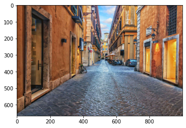
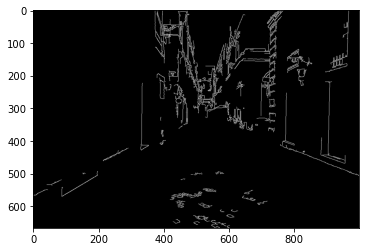
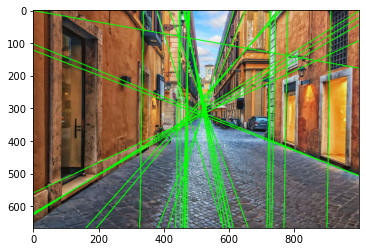
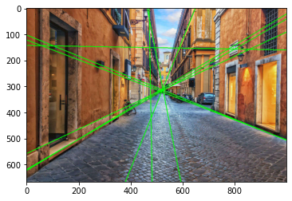
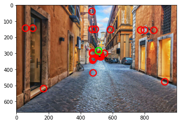

Find vanishing point in image (1 point perspective)
%matplotlib inlineimport cv2
import numpy as np
import urllib
import matplotlib.pyplot as pltGet sample image
First download a sample image.
def get_image_from_url(url):
"""https://stackoverflow.com/a/3969809"""
with urllib.request.urlopen(url) as u:
s = u.read()
arr = np.asarray(bytearray(s), dtype=np.uint8)
img = cv2.imdecode(arr, -1) # 'Load it as it is'
img = cv2.cvtColor(img, cv2.COLOR_RGB2BGR)
return img
img = get_image_from_url('https://static.toiimg.com/photo/69928969/cobble.jpg')
plt.imshow(img)<matplotlib.image.AxesImage at 0x7fb5ef127670>
Edge detection
We are interested in using the most prominent edges in the image to compute the Hough lines. To find the edges, we use Canny edge detection.
gray = cv2.cvtColor(img, cv2.COLOR_RGB2GRAY)
edges = cv2.Canny(gray, 200, 700)
plt.imshow(edges, cmap='gray')<matplotlib.image.AxesImage at 0x7fb5ef468e80>
Hough lines from edges
We can use the edges obtained above to compute Hough lines.
lines = cv2.HoughLines(edges, 1, np.pi/180, 100)
img_lines = img.copy()
# adapted from https://stackoverflow.com/a/60515853
for line in lines:
rho,theta = line[0]
a = np.cos(theta)
b = np.sin(theta)
x0 = a*rho
y0 = b*rho
x1 = int(x0 + 10000*(-b))
y1 = int(y0 + 10000*(a))
x2 = int(x0 - 10000*(-b))
y2 = int(y0 - 10000*(a))
cv2.line(img_lines, (x1,y1),(x2,y2),(0,255,0),2)
plt.imshow(img_lines)<matplotlib.image.AxesImage at 0x7fb5da4183a0>
lines = cv2.HoughLines(edges,
0.85,
np.pi/180,
100,
# min_theta=np.pi/36,
# max_theta=np.pi-np.pi/36
)
img_lines = img.copy()
segments = []
for line in lines:
rho, theta = line[0]
# skip near-vertical lines
if abs(theta-np.pi/90) < np.pi/9:
continue
a = np.cos(theta)
b = np.sin(theta)
x0 = a*rho
y0 = b*rho
x1 = int(x0 + 10000*(-b))
y1 = int(y0 + 10000*(a))
x2 = int(x0 - 10000*(-b))
y2 = int(y0 - 10000*(a))
segments.append((np.array((x1, y1)),
np.array((x2, y2))))
cv2.line(img_lines, (x1,y1),(x2,y2),(0,255,0),2)
plt.imshow(img_lines)<matplotlib.image.AxesImage at 0x7fb5786558b0>
def seg_intersect(s1, s2):
"""https://stackoverflow.com/a/3252222"""
da = s1[0] - s1[1]
db = s2[0] - s2[1]
dp = s1[0] - s2[0]
dap = perp(da)
denom = np.dot( dap, db)
num = np.dot( dap, dp )
return (num / denom.astype(float))*db + s2[0]
def perp(a):
b = np.empty_like(a)
b[0] = -a[1]
b[1] = a[0]
return b
intersections = np.empty((len(segments), len(segments), 2))
intersections[:] = np.nan
for i, s1 in enumerate(segments):
for j, s2 in enumerate(segments[i:], start=i):
if i != j:
intersections[i,j] = seg_intersect(s1, s2)
intersections = intersections[~np.isnan(intersections)]
intersections = intersections.reshape((int(len(intersections)/2), 2)).astype(np.int16)
intersectionsarray([[484, 332],
[522, 314],
[858, 157],
[550, 301],
[513, 318],
[523, 314],
[525, 313],
[477, 335],
[525, 307],
[776, 156],
[170, 520],
[509, 317],
[517, 312],
[524, 308],
[477, 336],
[587, 153],
[520, 318],
[519, 321],
[522, 314],
[524, 309],
[479, 422],
[800, 156],
[ 58, 144],
[103, 144],
[493, 151],
[474, 151],
[517, 320],
[526, 315],
[525, 315],
[477, 343],
[926, 477],
[527, 323],
[476, 304],
[525, 315],
[476, 295],
[472, 40]], dtype=int16)img_points = img.copy()
# show all intersection points
for p in intersections:
cv2.circle(img_points, (p[0], p[1]), 20, (255,0,0), 5)
# show mean intersection point
vp_hat = np.mean(intersections, axis=0).astype(np.int16)
cv2.circle(img_points, (vp_hat[0], vp_hat[1]), 20, (0,255,0), 5)
plt.imshow(img_points)
print(f"Estimated vanishing point coordinates:", vp_hat)Estimated vanishing point coordinates: [513 285]